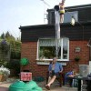
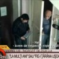

Vă mai amintiţi veselii ani de şcoală primară în care puneaţi ciungă pe scaunul profei de mate şi viermişori de jeleu în penarul surorii mai mici? Pe atunci ţâşnea direct pe primul loc în topul popularităţii cel care şterpelea caietul de teme al tocilarului clasei sau reuşea să lipească eticheta “Scuipaţi aici” pe spinarea directoarei.
Din păcate, moderatori precum Cătălin Măruţă, Dan Negru, Mădălin Ionescu sau Simona Gherghe au rămas cu simţul umorului tot prin clasa a patra, numai că acum au la dispoziţie mii de euro şi milioane de “colegi” care să-i aplaude, strigând la unison “bine i-a făcut”. S-a terminat cu invizoacele, păianjenii de cauciuc şi pernele cu pârţuri. Astăzi poantele adevărate includ maşini în flăcări, clădiri fumegând, bombe, pistoale, infractori şi poliţişti.
Bătaie pe rolul de tolomac
Victimele predilecte sunt aceleaşi douăzeci de pseudo-vedete pe care le vedem zilnic pe la televizor ba gătind, ba cumpărându-şi beţişoare pentru urechi, ba spălându-şi rufele murdare oriunde altundeva mai puţin în familie, ba … luând plasă. Nu ştim dacă IQ-ul “mondenilor” autohtoni se situează sub cifrele de rating ale emisiunilor în care apar sau dacă asemenea personaje sunt în stare de orice nerozie numai să-şi vadă mutra pe ecran, dar scenariile însăilate ale nenumăratelor farse miros a făcătură de la o poştă.
Ce om cu toate minţile la purtător crede sincer că un taximetrist l-ar plimba prin tot oraşul, refuzând cu obstinaţie să-l lase să coboare din maşină? Cât de infantil trebuie să fii ca să iei în serios gaşca de mafioţi care se fugăreşte cu mascaţii ziua în amiaza mare? Cam cât de tolomac eşti dacă stai la discuţii cu un curier care-ţi livrează un coşciug de ziua ta? Câte zile trebuie să-ţi fi petrecut în sihăstrie ca să-ţi imaginezi că e cu putinţă să pui piciorul pe stradă şi să nimereşti fix în mijlocul unui exerciţiu militar?
Şi, mai ales, cât de tare trebuie să te plictiseşti pentru ca toate astea să ţi se pară amuzante după ce le-ai văzut ani de-a rândul? Unde e umorul de odinioară?


{kind=link}
{kind=link}
Cel mai trist e ca sunt oameni care chiar cred ca nu e facatura
Umorul de azi ma face sa plang dupa Vacanta Mare
Cel mai greu e sa faco umor fara sa te folosesti de cuvinte tabu…Un astfel de umor, umorul de alta data, il poti gasi pe youtube, discurile de vinil sau in arhiva tvr
Exemplu 1
Exemplu 2
Radeam condescendent la filmul “Idiocracy” al lui Mike Judge, dar uitam de “Te pui cu blondele ?” cu Dan Negru…
Comments on this entry are closed.